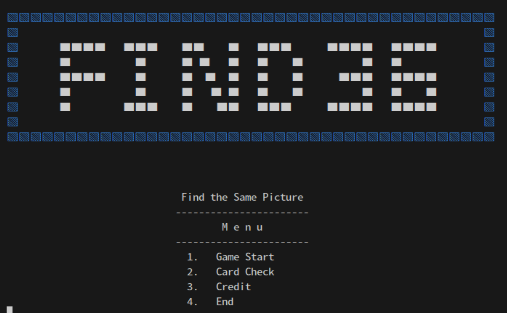
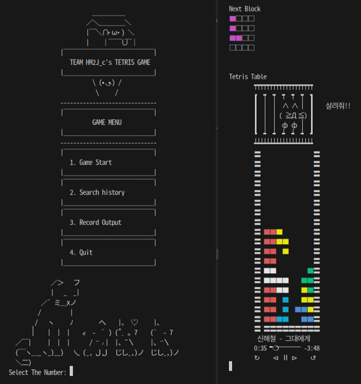
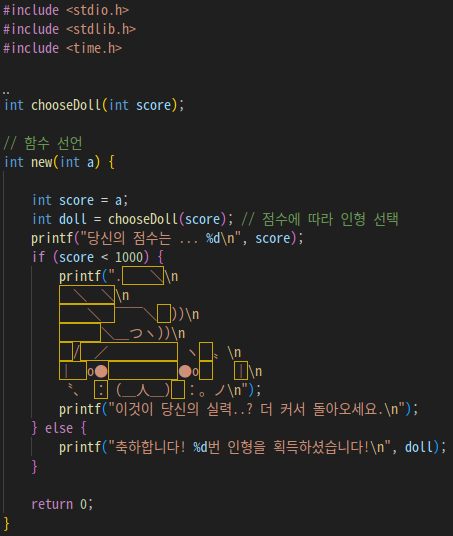
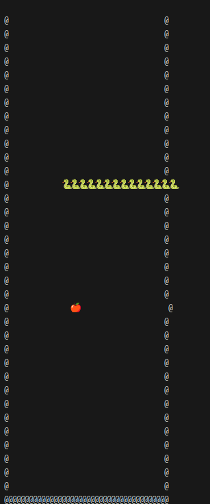
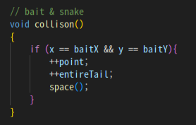
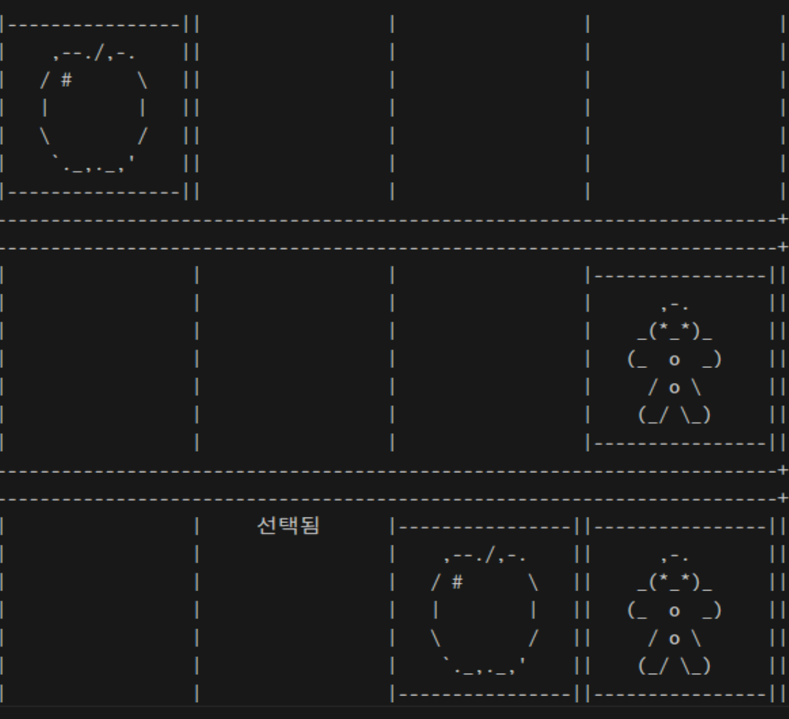

STUDENT PROJECTS / SEJONG 2024
터미널 속 작은 게임,
팀으로 만드는 첫 프로그램
테트리스, 스네이크, 같은 그림 찾기. 2024년 고려대 세종 C언어 팀 프로젝트를 원본 실행 화면과 발표자료로 소개합니다.
배운 문법을
하나의 게임으로 엮는 경험
키보드 입력을 받아 상태를 바꾸고, 화면을 다시 그리며, 점수와 결과를 남깁니다. 세 팀은 익숙한 게임을 소재로 C언어의 함수·배열·조건문을 실제 프로그램의 흐름으로 연결했습니다.
교육생이 구현한 결과와 시행착오를 함께 소개합니다. 게임 제작은 각 팀의 작업이며, 최수길은 프로젝트 지도·교육담당으로 참여했습니다.

크게 보기 ↗3조 발표자료 6쪽. 게임 시작, 카드 미리보기, 크레딧과 종료 메뉴를 구성했습니다.
- 세 가지 주제
- 테트리스 · 스네이크
같은 그림 찾기 - 공통 개발 경험
- C언어 · Ubuntu · Git
함수 분리와 화면 출력 - 자료의 기준
- 팀별 발표자료·기술서
1차 프로젝트 결과보고서
TEAM 01 / C GAME PROJECT
테트리스 · 점수에서 기록과 보상으로
1조는 기존 테트리스 코드를 바탕으로 블록 색상, 점수에 따른 펫 보상, 데이터베이스 기록 기능을 확장했습니다. 게임 규칙을 처음부터 모두 작성하는 대신, 기존 프로그램의 구조를 읽고 새로운 기능이 들어갈 위치를 찾는 작업이었습니다.
발표자료는 MySQL C API를 이용한 점수 저장·조회 흐름을 설명합니다. 입력받은 결과를 저장하고 다시 화면에 표시하면서 파일 입출력에서 데이터베이스 입출력으로 범위를 넓혔습니다. 게임 종료 뒤에는 점수에 따라 ASCII 그림과 보상 안내를 출력하도록 구성했습니다.
협업 방식도 결과물의 일부였습니다. 헤더와 C 소스 파일을 나누고 CMake로 빌드 환경을 구성했으며, 기능별 브랜치를 합치는 GitHub Flow를 발표했습니다. 색상 표시가 기대와 다르게 나오는 문제를 추적한 과정도 남겼습니다. 포인트 상점·멀티플레이·이어하기는 당시의 후속 아이디어로 제안됐습니다.

크게 보기 ↗1조 발표자료 24쪽. 게임 시작·기록 메뉴와 색상을 적용한 블록 화면입니다.

크게 보기 ↗1조 발표자료 26쪽. 점수에 따라 ASCII 그림과 보상 안내를 출력하는 코드입니다.
TEAM 02 / C GAME PROJECT
스네이크 · 좌표와 상태 갱신
2조는 뱀·먹이·벽을 터미널에 표시하는 스네이크 게임을 만들었습니다. 메뉴 표시, 게임 화면, 입력 처리와 상태 갱신을 여러 C 파일로 나누고, i·j·k·l 키 입력을 좌표 변화로 연결했습니다.
먹이 좌표와 머리 좌표가 같아지면 점수와 길이 값을 증가시키고 새 먹이를 배치합니다. 벽과 만났을 때 게임을 끝내는 조건도 구현 항목으로 제시했습니다. 기술서에는 MySQL로 사용자명과 점수를 관리하는 목표가 담겨 있지만, 여기서는 발표자료에서 직접 확인되는 게임 로직과 출력 화면을 중심으로 소개합니다.
화면을 만드는 일은 규칙을 작성하는 일만큼 까다로웠습니다. 이모지와 문자의 출력 폭이 달라 벽과 먹이가 밀렸고, 꼬리 길이를 늘리는 과정에서 뱀이 중복 출력되는 문제가 남았습니다. 몸통 충돌 판정은 방향을 바꾸자마자 충돌하는 문제 때문에 비활성화했다고 발표했습니다. 한 번 누르면 계속 이동하는 동작과 먹이 표시 역시 개선 과제로 기록했습니다.
이 사례는 좌표 배열에 저장된 상태와 터미널에 보이는 화면을 각각 확인해야 한다는 점을 보여줍니다. 완성 여부뿐 아니라 어떤 입력에서 문제가 생겼는지 설명하는 것이 다음 디버깅의 출발점이 됐습니다.

크게 보기 ↗2조 발표자료 20쪽. 원본에서 개선 과제와 함께 제시한 실행 화면입니다. 벽과 뱀의 정렬 문제도 그대로 확인할 수 있습니다.

크게 보기 ↗2조 발표자료 14쪽. 먹이의 좌표와 일치하면 점수·길이 값을 늘리고 새 먹이를 배치하는 로직입니다.
TEAM 03 / C GAME PROJECT
같은 그림 찾기 · 배열과 화면 구성
3조는 ASCII 그림을 이용한 카드 맞추기 게임을 제작했습니다. 발표자료는 4×4 보드에 여덟 쌍의 카드를 배치하고 W·A·S·D와 스페이스 키로 이동·선택하는 규칙을 설명합니다. 기술서에는 카드 미리보기와 한 쌍을 맞힐 때 1점을 얻는 기능이 기록되어 있습니다.
시작 메뉴, 카드 그림, 게임 로직을 나누어 구성하고 CMake로 소스 파일을 묶었습니다. 문자 하나의 위치가 화면 전체의 정렬에 영향을 주기 때문에 ASCII 그림의 줄바꿈·공백·특수문자를 다루는 작업도 중요했습니다.
발표에는 크레딧 문자열이 한꺼번에 출력되는 현상, 문자 정렬, 특수문자 표현과 색상 처리의 어려움이 남아 있습니다. 화면과 동작 개선, 코드 최적화, 추가 테스트는 이후 과제로 제시했습니다. 카드 선택 화면은 작은 규칙을 배열과 출력 함수로 나누어 구현한 과정을 보여줍니다.
3조 발표자료 6쪽. 게임 시작, 카드 미리보기, 크레딧과 종료 메뉴를 구성했습니다.

크게 보기 ↗3조 발표자료 6쪽. 카드 그림과 선택 표시를 문자로 출력한 원본 실행 화면입니다.
작동하는 부분과 남은 문제를 함께 기록하다
세 팀은 입력·상태 갱신·화면 출력이라는 공통 구조에서 서로 다른 게임을 만들었습니다. 테트리스는 기존 코드의 확장과 데이터 저장, 스네이크는 좌표와 충돌 처리, 같은 그림 찾기는 배열과 문자 화면 구성에 각각 초점을 맞췄습니다. 소스 분리와 빌드, Git 협업, 발표·기술서 작성까지 프로그램 밖의 개발 과정도 경험했습니다.
1차 프로젝트 결과보고서의 운영기간은 2024년 3월 20~26일(40시간)입니다. 2·3조 기술서는 집중 제작기간을 3월 21~22일로 기재하며, 1조 기술서에는 종료일 오기가 있어 월 단위로 소개했습니다. 전체 교육과정의 기간과는 구분합니다.
그림은 세 팀의 원본 발표자료에서 추출한 실행 화면과 코드입니다. 이름·연락처가 포함된 명단과 원본 행정문서는 공개하지 않았습니다. 기능 설명은 당시 발표자료·기술서에 근거하며, 이번 게시를 위해 게임을 새로 실행 검증한 결과는 아닙니다.